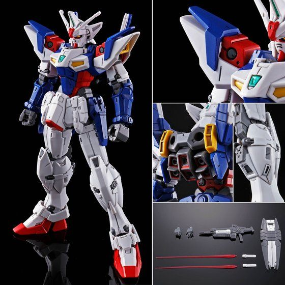
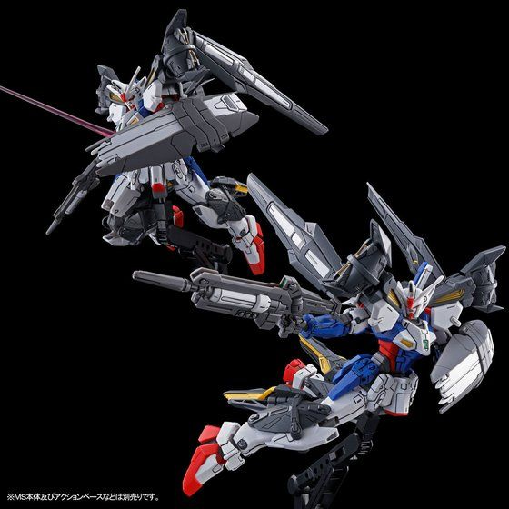
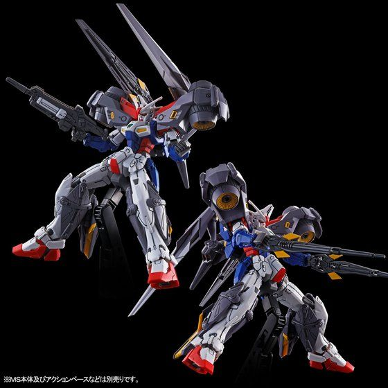

OZX-GU01A Gundam Geminass 01 là Mobile Suit xuất hiện trong New Mobile Report Gundam Wing Dual Story: G-Unit , ngoại truyện của Mobile Suit Gundam Wing. Được lái bởi Odin Bernett thuộc tổ chức MO-V's
2 Beam Saber được trang bị ở trên backpack.
Một vũ khí chùm tia nguyên mẫu được phát triển bởi phòng thí nghiệm nghiên cứu vật lý lượng tử của OZ. Nhờ máy gia tốc hạt xoắn ốc nên nó có thể bắn ra các chùm Muon tốc độ cao. Ngoài ra còn chứa một thiết bị ngưng tụ điện từ ở bên trong, cho phép nó bắn ra một siêu đạn tích điện . Súng có thể được gắn bên trong khiên .
Một chiếc khiên cầm tay được chế tạo bằng Hợp kim Gundanium có cấu trúc tổ ong. Nó được trang bị một máy phát điện trường, giúp nó có hiệu quả chống lại cả vũ khí đạn pháo và đạn chùm.
Geminass được trang bị Hệ thống PX (Pilots Experience). Hệ thống này phản ứng khi các giác quan của phi công trở nên nhạy bén hơn và tăng hiệu suất phản hồi của MS lên mức tối đa. Khi hệ thống hoạt động, tốc độ phản ứng và tính cơ động được tăng lên rất nhiều. Tuy nhiên, việc kích hoạt hệ thống gây áp lực lớn cho phi công, do đó, một bộ giới hạn đã được đặt trên hệ thống. Nếu giới hạn bị bỏ qua, sẽ có nguy cơ mobile suit bị phá hủy.
Được thiết kế bởi Tiến sĩ Berg và được chế tạo bởi Hermann Industry của MO-V, Geminass 01 là một trong 2 MS đa năng "G-UNIT" do MO-V bí mật phát triển."G-UNIT" là một ý tưởng về mobile suit có khả năng thích ứng với nhiều tình huống chiến trường khác nhau bằng cách trang bị nhiều loại vũ khí và bộ phận tùy chọn.Được chế tạo thông qua cơ chế "linear-lock bolt" (bu lông khóa tuyến tính), một hệ thống chuyển đổi thiết bị chạy bằng điện từ cho phép Geminass thay đổi tay, chân và đầu của nó, cho phép nó chuyển sang các loại trang bị khác nhau tùy thuộc vào môi trường chiến đấu được gọi là "Units". Mặc dù giáp của nó được làm từ Hợp kim Gundanium và hình dáng của nó giống với 5 Gundam được gửi đến Trái đất như một phần của Chiến dịch Meteor, nhưng Geminass không liên quan trực tiếp đến chúng.Tuy nhiên, khi phi công của nó là Odin Bernett biết các phi công của Gundam coi Gundam là biểu tượng của tự do và là người bảo vệ các thuộc địa, anh ta đã đổi tên Geminass 01 thành Gundam Geminass. Ngoài ra, số kiểu máy của nó ban đầu chỉ bắt đầu bằng "X", nhưng "OZ" đã được thêm vào sau khi MO-V tự căn chỉnh với OZ. Vào năm AC 195, 5 cậu thiếu niên sử dụng Gundam để tiến hành một cuộc chiến tranh du kích chống lại OZ và sự đàn áp của họ đối với các thuộc địa ngoài không gian. Khác xa với cuộc xung đột này, các Gundam mới đang được bí mật chế tạo tại nhà máy sản xuất MS tại tiểu hành tinh MO-V. Được phát triển bởi Tiến sĩ Berg, OZX-GU01A Gundam Geminass 01 và OZX-GU02A Gundam Geminass 02 thể hiện sự thay đổi trong triết lý thiết kế MS . Geminass 01 được giao cho phi công tân binh Odin Bernett, người lúc đầu không thể sử dụng hệ thống PX nhưng đã thành thạo nó theo thời gian. Sau này, Geminass 01 được nâng cấp lên OZX-GU01LOB Gundam L.O.Booster và cuối cùng được chuyển giao cho cựu phi công OZ Prize Roche Nattono.Trong Gundam EX A, Leos Alloy sử dụng Gundam Geminass được trang bị High Mobility Unit và tham gia trận chiến chống lại XXXG-01W Wing Gundam của Heero Yuy để thu thập dữ liệu chiến đấu của anh ta. Tuy nhiên, Leos cuối cùng đã sử dụng Geminass để bảo vệ Wing Gundam khỏi cuộc tấn công của Extreme Gundam Carnage Phase và phải rời khỏi thế giới After Colony.
